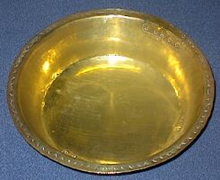

Ch'est mérveilleux comme tchi'qu'eune faillie ronche dé rein du tout, auve rachinne dans terre pèrdue l'long d'un fossé ou sus eune banque peut fourni d'si belles mouaithes, et chaque mais d'août nos donne lé pliaisi d'ér'vaie les preunmièthes mouaithes meûthi sus toutes chès ronches-là.
Ch'est mérveilleux comme tchi'qu'eune faillie ronche dé rein du tout, auve rachinne dans terre pèrdue l'long d'un fossé ou sus eune banque peut fourni d'si belles mouaithes, et chaque mais d'août nos donne lé pliaisi d'ér'vaie les preunmièthes mouaithes meûthi sus toutes chès ronches-là.
Lé temps pâssé ch'tait la l'moment d'aller ès mouaithes - auve eune p'tite bolle à c'menchi pouor faithe lé preunmyi pâté d'l'été. Mais quand v'nîn la plieine saison auve dé tchi un mio pus grand - un pangni en bouais ofûche auve gazette ou mio d'papi dans l'fond et alentou des bords, car aut'chun jus qu'écapper laîsser tout pourp'âtre.
Epis i'fallait un p'tit cro étout, au but d'eune finne féthaille ou d'un long bâton - fait sèrvi pouor appraichi et aveindre les ronches au liain, car bein souvent ch'tait l'ieux auve les pus belles et grosses mouaithes, les siennes au-liain.
Ch'tait la l'moment étout d'aver tout pliein d'pâcienche et accuo'the mus, dé l'aîgue. Pouor tchilyi les livres et livres dé mouaithes pouor remplyi n'pas rein qu'lé pangni, mais l'bachîn à la maison auve un paids respectabl'ye. Car yavait des p'tits bachîns, mais yen'avait des grands étout!
Mouaithes èrvénuent à la maison, p'sée et bein lavée, bachîn propre étout, seulement lé d'hors rester tout né, i'fallait mettre un brin dg'ieau dans l'fond pouor rein à happé.

Au pid l'âtre dans la boulangu'thie, billettes dé bouais d'fenduent duthant l'hivé, à ch't'heuthe sec, taient prêtte pouor lé travas en main souos l'trépid. P'tit feu pouor c'menchi, bachîn auve mouaithes dédans caûffer douochement sus l'trépid. D'temps en temps i'fallait rêmoué tout douochement la bachinée d'mouaithes auve un p'tit rabot ou grosse tchulyi en bouais. À m'suthe qué v'la tchi caûffer, les mouaithes touonnaient graduellement en pouaîsse.
Bein seux dans eune bachinée d'mouaithes tchuites et en pouaîsse y'avait des milles et des milles pépins et pouor finni auve eune gelée finne et cliaithe, la tâche n'tait pon finie! I'r'fallait mettre chutte pouaîsse-là dans eune pouque en mousselinne et la pendre à d'goutter san jus. Auprès bein d's'heuthes, même nièt, i'fallait èrmettre lé jus à bouoilli eune d'nouver dans l'bachîn, auve eune livre dé chucre pouor chaque pînte dé jus, j'comprends.
À m'suthe qué la gelée s'faîthait, eune p'tite tchul'lée dé d'dans l'bachîn 'tait mînt dans eune souos-tasse à èr'fraidgi sus lé sî ou l'ché d'la fnêtre en d'hors dé la boulangu'thie, pouor pouver jugi lé bouôn moment quand l'bachîn auve gelée tchuite et toute faite, 'tait r'haler dé d'sus l'trépid. Auprès ch'la i'n'rester qu'a la mettre en pots et la couvri.
Bein seux nous mousses j'voulions la gouoûter aussitôt èr'fraidgie et n'pas seulement litchi la tchulyi ou la souos-tasse ou-savez bein - mais sus eune bouonne beurée d'pain, pouor sé faithe seux qu'ou 'tait bouonne et bein faite chutte gelée d'mouaithe - j'tionmes janmais d'sappointée!
Ted Syvret
Viyiz étout: